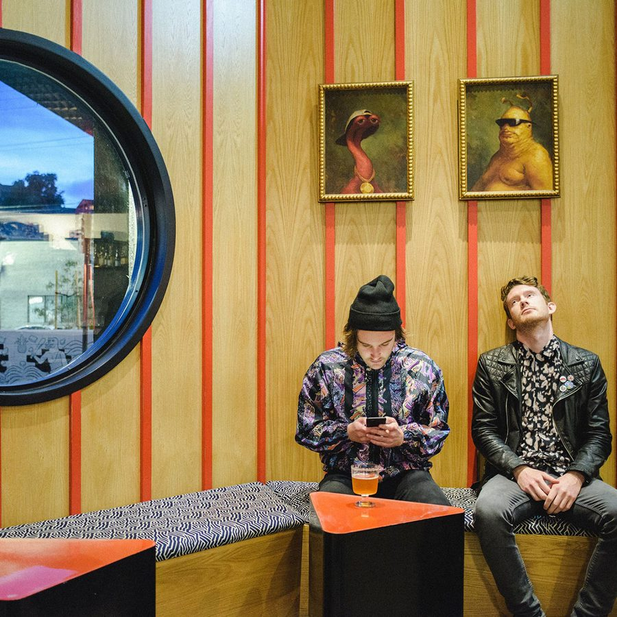

Botnek Further Cultivate Their House-Head Mentality With Earthshaking “Vibrate”


You could be forgiven for being more familiar with Canadian duo Botnek’s big room sounds, showcased on labels like Monstercat, and in particular, their collaboration with Zedd on “Bumble Bee.” However, the pair have been sharpening their house music skills, with their success growing increasingly obvious on tracks like last year’s “Don’t Need You.”
One such label paying close attention is the Box of Cats crew, who were rather charmed by the aforementioned single. “Their production and sound design are so unique and, applied to this new sound, make it ever so satisfying,” the label told us. This encouraged Box of Cats to tap Botnek for a new two-track EP, and we’re offering a preview of “Vibrate” from the B-side.
“Vibrate” certainly does what it says on the tin, showcasing their impressive approach to sound design—which indeed equally applies, whether they’re producing big room or house—as this track certainly does shake the house down. Pinned down by a rocking tech house groove and hyped-up vocal samples, when the full strength of that bassline drops a minute in, it certainly is a doozy.
Available October 4 via Box of Cats.
Follow Botnek on Facebook | Twitter | SoundCloud
Follow Box of Cats on Facebook | Twitter | SoundCloud